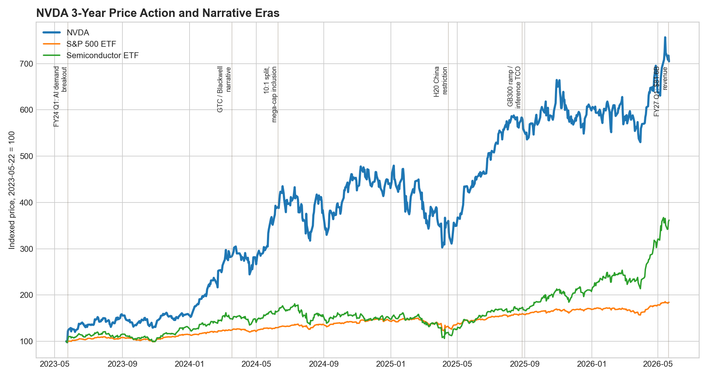
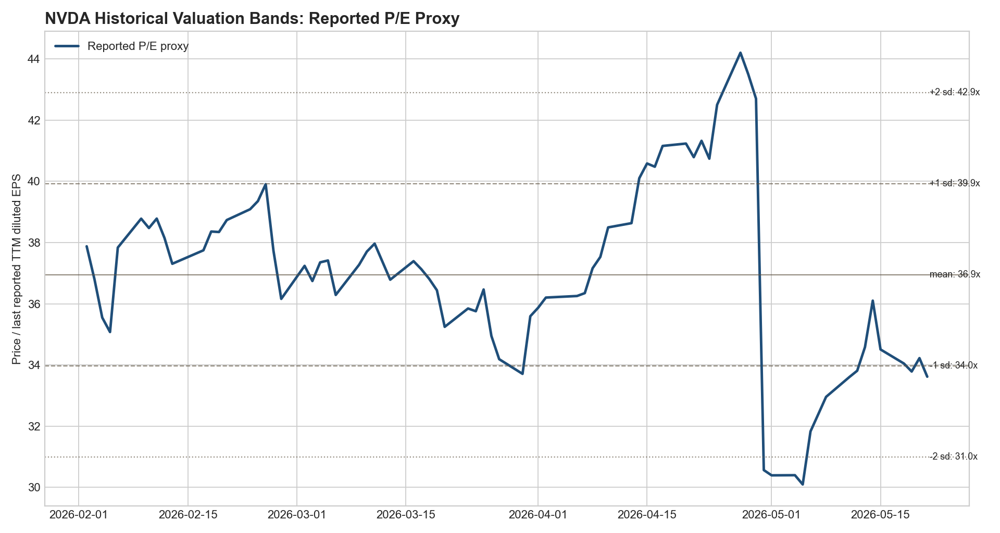
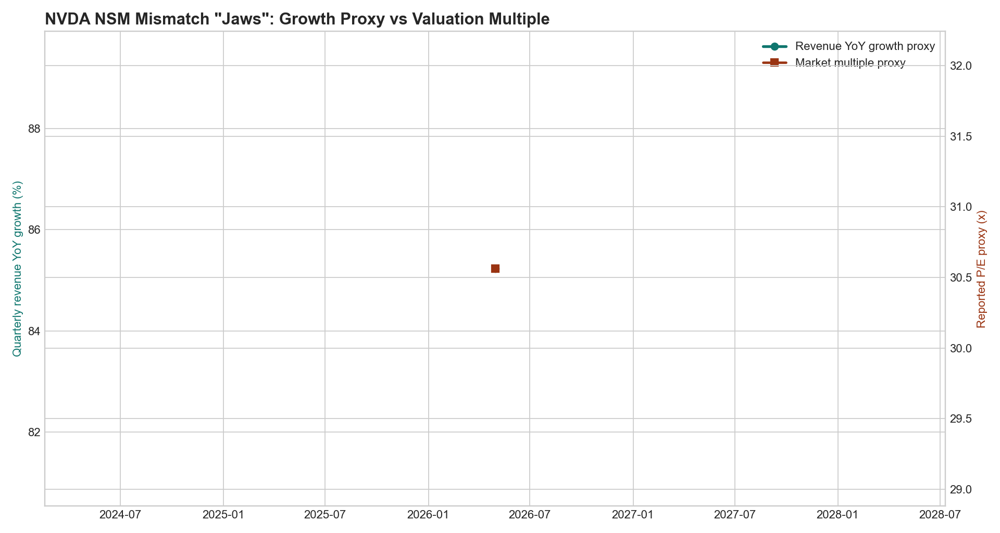

Ticker: NVDA
Date: 2026-05-22
Classification: Advance to next-stage research / Structural mispricing candidate
结论：值得进入下一阶段研究，但不是因为“财报强”这一层面。NVDA 当前已经是强共识资产，Q1 FY2027 收入 816 亿美元、数据中心 752 亿美元、Q2 指引 910 亿美元、毛利率约 75%，这些都已被卖方快速上修进模型。真正需要研究的是市场是否仍在用 FY27/FY28 EPS × P/E 和 hyperscaler CapEx beta 给 NVDA 定价，而公司经济实质正在切换到 AI factory lifetime economics：每瓦、每美元、每机架产生 token 与毛利的能力。
错锚假设：如果 Vera Rubin、GB300、Spectrum-X/NVLink 与 CUDA 软件栈让 NVDA 持续降低 token cost，并把 ACIE、AI native cloud、sovereign、enterprise/industrial 与 physical AI 纳入同一平台，市场用“GPU 周期峰值”或“云厂商 CapEx 一阶导”可能低估了增长持续期。反过来，如果 AI 辅助迁移削弱 CUDA 锁定、ASIC 在稳定推理负载上快速吃份额，或 GB300/Rubin 供给斜率落后，当前估值就只是看起来便宜。
| Item | Latest Situation |
|---|---|
| Market Data & Positioning | 2026-05-21 收盘价 $219.51，52 周区间 $129.16–236.54；市值约 $5.32T，EV 约 $5.38T。OpenBB/YFinance 一致显示卖方共识为 strong buy，均值目标价 $278.03，中位数 $275。 |
| Key Financial Metrics | Q1 FY2027 收入 $81.6B，同比 +85%；Data Center $75.2B，同比 +92%；GAAP/non-GAAP GM 74.9%/75.0%；FCF 约 $48.6B；Q2 FY2027 收入指引 $91.0B ±2%，不包含中国数据中心计算收入。 |
| Price Action & Technicals | 30 日技术层仍偏强：收盘价高于 50 日和 200 日均线，RSI 57.8；但 MACD histogram 转负，说明财报后创新高附近出现短线动能降温。 |
| Positioning | 空头占流通股约 1.22%，机构持股约 70.7%。这不是 crowded short；风险更多来自多头高预期与 benchmark 权重，而不是空头挤压。 |
| Key Metric | Value | Implication |
|---|---|---|
| Q2 FY2027 指引 | $91B | 核心验证点：若无中国数据中心计算收入仍能顺利交付，需求广度和供给斜率会被进一步确认。 |
| Data Center revenue | $75.2B | 同比 +92%，其中 compute $60.4B、networking $14.8B，说明利润池正在从 GPU die 扩展到系统/网络。 |
| Reported P/E proxy | 33.6x | 低于本次 3 年代理均值 36.9x；市场表面高估值，但 EPS 上修速度正在稀释倍数。 |
| Shareholder return | $80B auth. | 额外回购授权和季度股息升至 $0.25，显示 FCF 质量强；但也需要判断是否代表再投资空间边际下降。 |
Market pricing anchor: 卖方样本高度一致，核心都是 P/E × 前瞻或标准化 EPS。高盛用 30x P/E × 标准化 EPS $8.25 得到 $250；摩根士丹利用约 22x P/E × CY27/FY28 MW EPS $13.08 得到 $288；瑞银用 19x P/E × C2027E EPS $12.68 得到 $245。换言之，市场不是没有看到增长，而是在争论应看哪一年 EPS、给多少倍，以及中国/ASIC/CapEx 风险是否压低倍数。
Embedded expectations: 当前股价对应 OpenBB/YFinance forward P/E 约 18.8x、trailing P/E 约 33.7x；FMP/YFinance 目标价均值 $278，隐含约 27% 上行。真正的 upside 不是把 2026 年收入简单外推，而是证明“token cost 下降 → 更高利用率/更长资产寿命 → 更高每 MW 毛利 → 更宽融资能力”的机制能持续。
| Company | Market Cap | Forward P/E | EV/EBITDA | Revenue Growth | Op. Margin |
|---|---|---|---|---|---|
| NVDA | $5.32T | 18.8x | 40.4x | 73.2% | 65.0% |
| AMD | $0.73T | 34.7x | 97.5x | 37.8% | 14.4% |
| AVGO | $1.96T | 22.7x | 54.1x | 29.5% | 44.9% |
| MRVL | $0.17T | 35.0x | 64.2x | 22.1% | 18.7% |
| TSM | $2.11T | 20.9x | 2.9x | 35.1% | 58.1% |
Historical Context & Charts: 三张图用于区分“价格已经反映了 AI boom”与“估值倍数是否仍落后于 NSM 转换”。P/E 图使用 reported TTM EPS proxy；NSM 图用季度收入同比作为公开可得的 value-creation proxy，原因是 token-per-watt/每 MW 毛利等理论 NSM 尚未系统披露。



NSM Framework:
| Lens | Assessment |
|---|---|
| CEO NSM | Lowest lifetime cost per token / token throughput per watt and dollar. 管理层反复强调客户买的不是 GPU，而是能持续生产 intelligence 的 AI factory；公开代理指标是 Data Center revenue、networking attach、GB300/Rubin ramp、MLPerf 与 token-cost 改善。 |
| Long-term investor NSM | 每 MW/每机架的可持续 gross profit 与 FCF，并由平台份额保护。 需要跟踪 frontier model 与 inference 份额、ACIE/sovereign/enterprise 渗透、网络 attach、gross margin 是否能维持 mid-70s。 |
| Market-consensus NSM | FY27/FY28 EPS、Data Center 指引与 hyperscaler CapEx。 卖方目标价仍主要由 P/E × EPS 决定，说明市场锚仍是财务模型而非 AI factory 单位经济。 |
| Mismatch category | Healthy lag with narrative-trap risk. 如果 AI factory 经济继续改善，市场的 P/E 锚低估 duration；如果 CUDA/ASIC/China 风险压低长期 EPS，市场并未错。 |
user value → agentic/reasoning workload expansion → higher token demand and utilization → AI factory dependence across hyperscale + ACIE + edge → networking/software/rack attach → pricing power, gross margin durability, FCF → higher justified EPS duration / multiple
Stream A — Market Consensus: 新闻流显示 Q1 beat-and-raise 仍引发“高预期兑现”式反应；中国 H200/H20 链条的核心是许可不等于交付，更不等于收入确认。Podwise 与买方材料把争议拉到更深层：多头看 inference output factory 和系统化 moat，空头看 CUDA 切换成本下降、ASIC 在稳定推理负载上的替代、以及 hyperscaler CapEx 的融资/ROI 压力。技术层面仍在上升趋势中，但财报后动能短线降温。
Stream B — Management Reality: 最新电话会和 10-Q 支持管理层叙事：Data Center $75B、Hyperscale $38B、ACIE $37B，第二类 AI data center 已经接近 hyperscale 规模；Q2 指引 $91B 且不含中国数据中心计算收入；Vera Rubin 计划 Q3 开始生产出货，管理层给出 standalone CPU 约 $20B 机会和 $1T Blackwell/Rubin revenue visibility。
Stream C — Buy-side Conviction: 买方流最有用的不是“看多/看空”，而是 falsification map：token economics 是否压缩、hyperscaler 是否把稳定推理迁到自研 ASIC、软件 moat 是否体现在 margin premium、Blackwell/Rubin 是否出现供给/封装/网络 ramp air pocket。
潜在机会存在，且更像 timing mismatch + framework mismatch 的组合。Timing mismatch 在于 FY27/FY28 EPS 仍可能随着 Q2/Q3 交付、ACIE 增长和 Rubin 订单上修；framework mismatch 在于市场仍以 P/E 讨论一家正在把芯片、网络、软件、整机柜和融资可得性组合成 AI factory 平台的公司。
但这不是低风险错杀。NVDA 已是强共识，卖方样本目标价 $245–288、OpenBB 共识均值 $278，说明“质量”和“大部分增长”已被看见。下一阶段研究应聚焦三个可证伪问题：第一，GB300/Rubin 是否继续把 token cost 降到竞争对手难以追的水平；第二，ACIE/AI native/sovereign/enterprise 是否能证明第二增长曲线不只是 hyperscaler 外溢；第三，GM mid-70s 与 FCF conversion 是否在系统业务占比提升后仍稳定。
| Stream | Primary files used |
|---|---|
| News | temp/news_nvda_findings.md; FreshRSS evidence files under collected_resources/20260522_freshrss_entry_*.txt. |
| Podwise | collected_resources/podwise_nvda_discussion.md. |
| Sell-side | temp/sell_side_nvda_findings.md; markdown excerpts under collected_resources/sell_side/. |
| Technical / Market Data | collected_resources/nvda_technical_30d.csv, openbb_snapshot_20260522.md, nvda_yfinance_snapshot.json, nvda_peer_snapshot_yfinance.csv. |
| Earnings Calls | collected_resources/earnings_calls/NVDA_FY2027-Q1_earnings_call_transcript.md plus prior three call transcripts. |
| SEC | collected_resources/nvda_2026-05-20_10q_0001045810-26-000052.html, nvda_2026-02-25_10k_0001045810-26-000021.html, nvda_sec_filings_index.json. |
| Buy-side | temp/buy_side_nvda_findings.md; source markdown files from SemiAnalysis, Stratechery, FundaAI and Clouded Judgement in collected_resources/. |